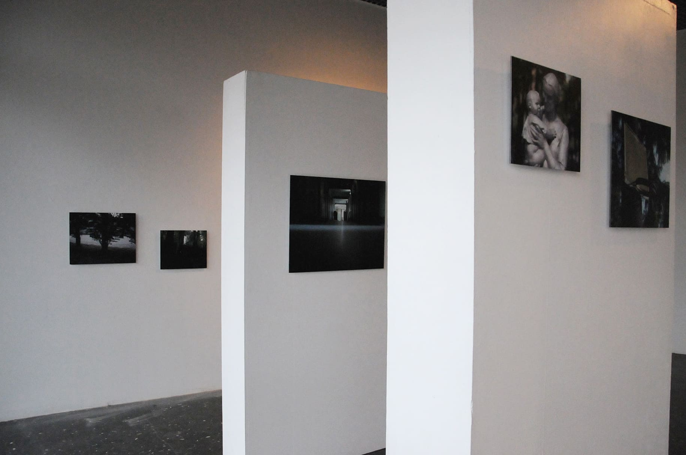
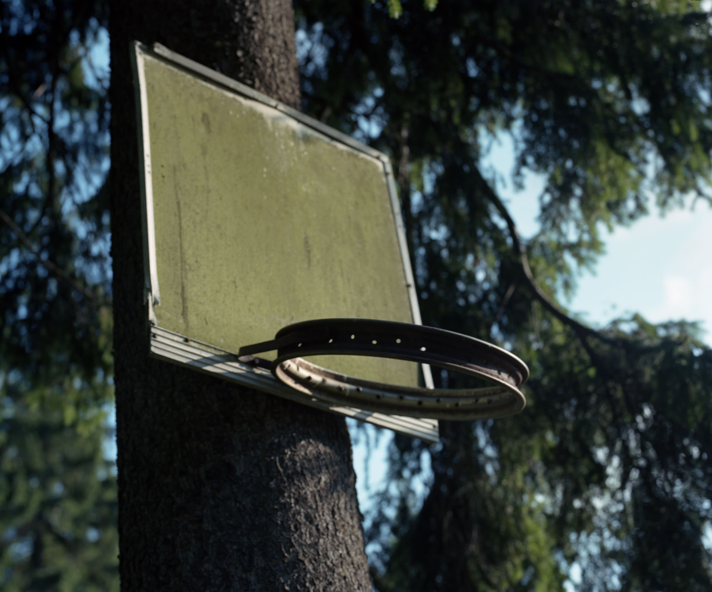
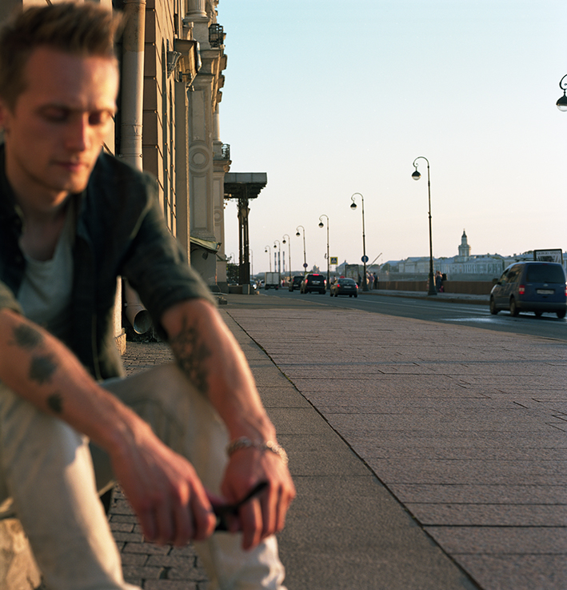
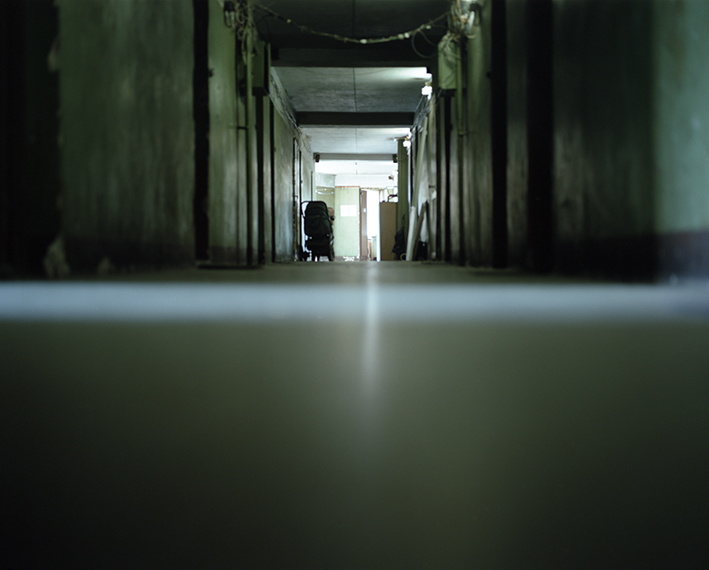
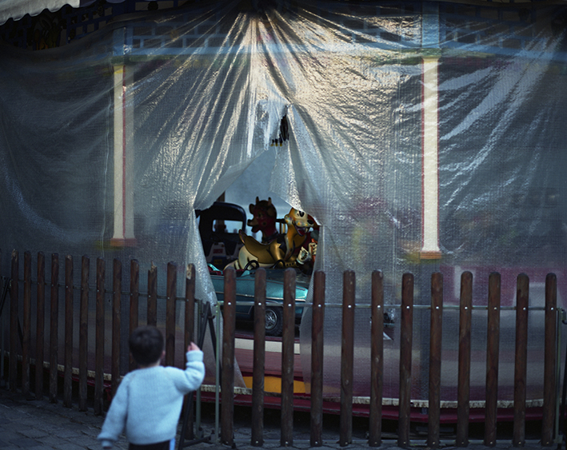
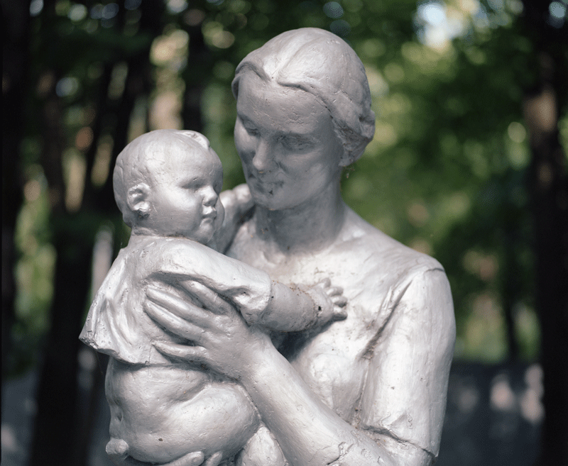

Dans la lumière du jour la nuit se rapproche
installation photographique
2015
Comment raconter le temps et son écoulement à travers l’image fixe ? Certains épisodes du quotidien, des moments simples, deviennent en quelque sorte les “lieux” ou “espaces topiques” de cette recherche du temps qui passe.
___
Journal du bord :
Les voyages sans but s’entremêlent ici : la France, la Russie, l’Allemagne.






×